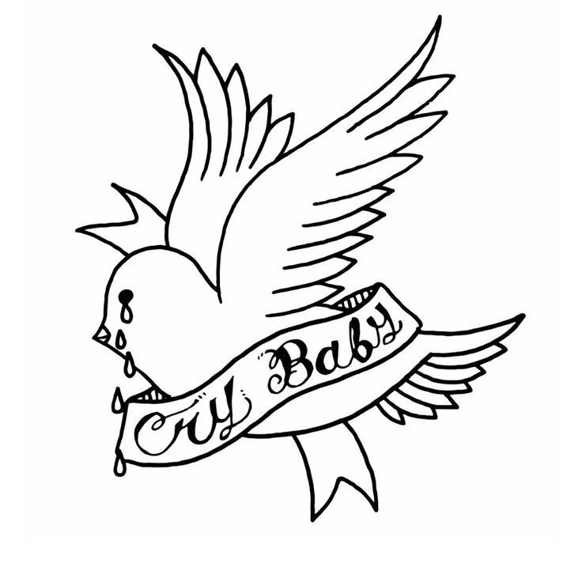

Conteúdo Independente, autocontido, ou seja começo, meio e fim
Os álbuns de Lil Peep ajudaram a popularizar a mistura de emo, rap e trap, influenciando uma nova geração de artistas.



Nascimento:
Falecimento:
Algumas músicas suas:
Alguns álbuns do Lil Peep e seus significados:
Conteúdo Independente, autocontido, ou seja começo, meio e fim
Os álbuns de Lil Peep ajudaram a popularizar a mistura de emo, rap e trap, influenciando uma nova geração de artistas.
